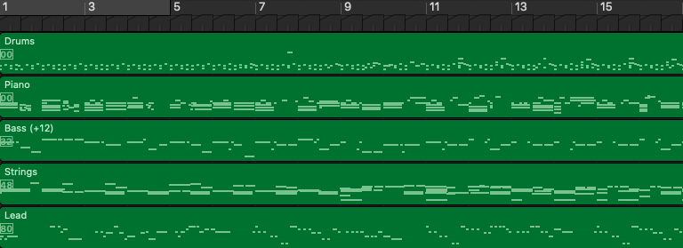
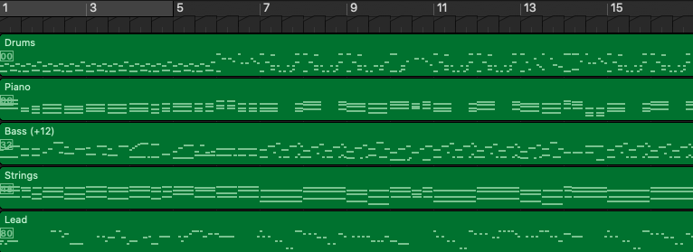
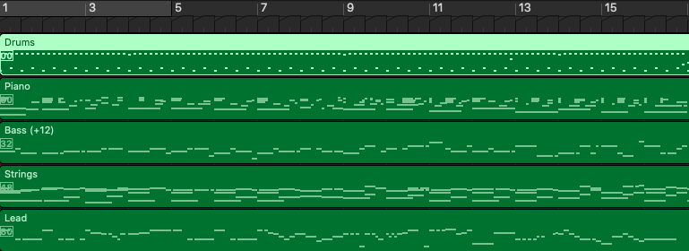
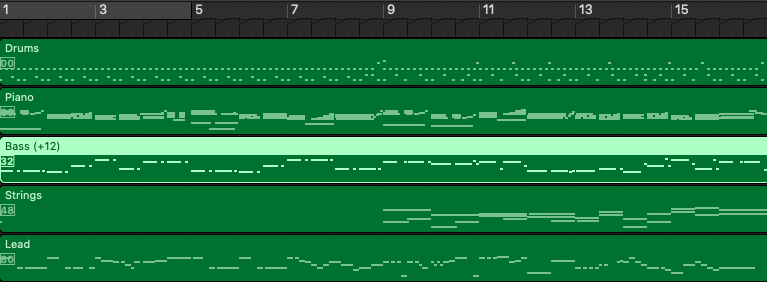
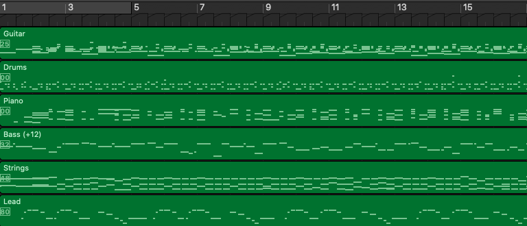
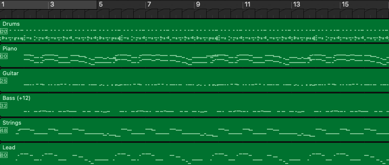
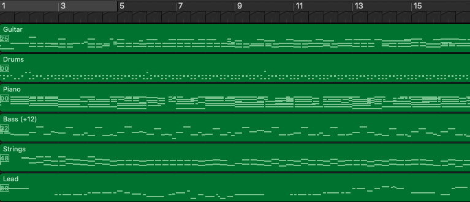
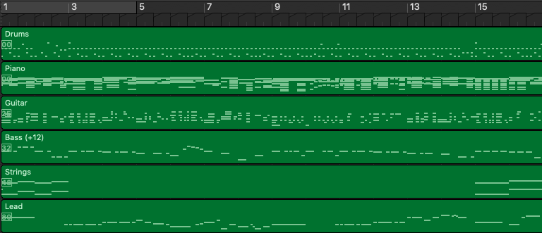

PopMAG: Pop Music Accompaniment Generation Arxiv: https://arxiv.org/abs/2008.07703 Audio / Melody (Input) PopMAG Ground-Truth Sample 1 Your browser does not support the audio element. Your browser does not support the audio element. Your browser does not support the audio element. Sample 2 Your browser does not support the audio element. Your browser does not support the audio element. Your browser does not support the audio element. Sample 3 Your browser does not support the audio element. Your browser does not support the audio element. Your browser does not support the audio element. Sample 4 Your browser does not support the audio element. Your browser does not support the audio element. Your browser does not support the audio element. MIDI (Pianoroll) / PopMAG Ground-Truth Sample 1   Sample 2   Sample 3   Sample 4  